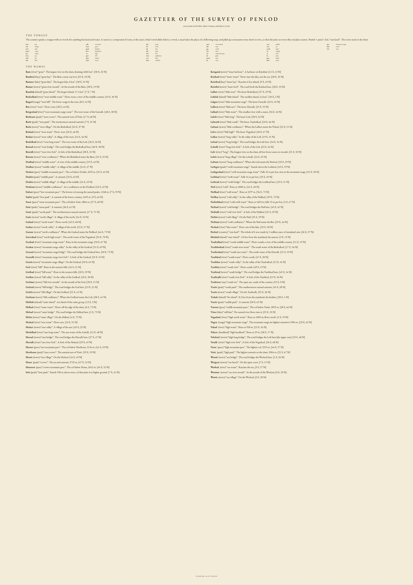

SURVEY OF PENLOD
No part of this country was drawn. An uplift field was written down (a mountain belt, a lower range, a gently rising plain, a sea), and then five million years of rain were simulated over it on a grid of 25-metre cells: stream-power incision, hillslope creep, lakes as local base level. The rivers, the coast, the lake and the summits are what the rain found. Towns stand where the ground is flat, watered and met by other valleys; roads follow the cheapest line between them.
Every name on the sheet is a true description of the place it names, in an invented tongue whose whole vocabulary is geography. Penlod is “rain land”. A town ending in -mur stands at a river mouth; a river called neil rises above 1500 metres. The gazetteer below gives the reason for every name.
THE GAZETTEER
every name on the sheet, what it means, and why it is true
- Bam river “great” The largest river on the sheet, draining 1682 km².
- Bamhed bay “great bay” The Bam comes out in it.
- Bamner lake “great lake” The largest lake, 8 km².
- Bamur town “great river-mouth” At the mouth of the Bam.
- Banduk island “great island” The largest island, 17.4 km².
- Bodralkad river “west middle water” Flows west; a river of the middle country.
- Bogrel range “west hill” The lower range in the west.
- Bot river “west” Flows west.
- Botgenkad river “west mountain range water” The west water of the Genralk.
- Bothoun peak “west crown” The summit west of Votir.
- Botir peak “west peak” The westernmost named summit.
- Botis town “west village” On the Bodralkad.
- Botkad river “west water” Flows west.
- Botkar town “west valley” A village of the west.
- Botlolkad river “west long water” The west water of the Lolt.
- Botrad town “west bridge” The road bridges the Bodralkad here.
- Botralk river “west river fork” A fork of the Bodralkad.
- Botum town “west confluence” Where the Botlolkad meets the Bam.
- Dralkad river “middle water” A river of the middle country.
- Dralkar town “middle valley” A village of the middle.
- Dralsot pass “middle mountain pass” The col below Draltir, 2693 m.
- Draltir peak “middle peak” A summit.
- Draltis town “middle village” A village of the middle.
- Draltum town “middle confluence” At a confluence on the Dralkad.
- Fadsot pass “low mountain pass” The lowest col among the named peaks, 1248 m.
- Fadtir peak “low peak” A summit of the lower country, 1639 m.
- Fasot pass “stone mountain pass” The col below Fatir, 2884 m.
- Fatir peak “stone peak” A summit.
- Gatir peak “north peak” The northernmost named summit.
- Gatis town “north village” A village of the north.
- Gatkad river “north water” Flows north.
- Gatkar town “north valley” A village of the north.
- Gatum town “north confluence” Where the Gatkad meets the Neilkad.
- Gatvokad river “north high water” The north water of the Vogatkad.
- Genkad river “mountain range water” Rises in the mountain range.
- Genkar town “mountain range valley” In the valley of the Genkad.
- Genrad town “mountain range bridge” The road bridges the Genkad here.
- Genralk river “mountain range river fork” A fork of the Genkad.
- Gentis town “mountain range village” On the Genkad.
- Grel river “hill” Rises in the western hills.
- Grelkad river “hill water” Rises in the western hills.
- Grelkar town “hill valley” In the valley of the Grelkad.
- Grelmur town “hill river-mouth” At the mouth of the Grel.
- Grelrad town “hill bridge” The road bridges the Grel here.
- Greltis town “hill village” On the Grelkad.
- Greltum town “hill confluence” Where the Grelkad meets the Lolt.
- Helduk island “outer island” An island of the outer group.
- Helkad river “outer water” Flows off the edge of the sheet.
- Helrad town “outer bridge” The road bridges the Helkad here.
- Heltis town “outer village” On the Helkad.
- Heskad river “east water” Flows east.
- Heskar town “east valley” A village of the east.
- Heslolkad river “east long water” The east water of the Lolralk.
- Hesrad town “east bridge” The road bridges the Hesralk here.
- Hesralk river “east river fork” A fork of the Heskad.
- Hessot pass “east mountain pass” The col below Hesthoun, 3134 m.
- Hesthoun peak “east crown” The summit east of Votir.
- Hestis town “east village” On the Heskad.
- Houn peak “crown” The second summit, 3732 m.
- Hounsot pass “crown mountain pass” The col below Houn, 2652 m.
- Irtir peak “lone peak” Stands 920 m above every col that joins it to higher ground.
- Keisgusk town “inner harbour” A harbour on Keisthed.
- Keiskad river “inner water” Flows into the lake, not the sea.
- Keisthed bay “inner bay” Reaches 6 km inland.
- Keisthir town “inner ford” The road fords the Keiskad here.
- Lalbot river “little west” The lesser Bodralkad.
- Lalduk island “little island” The smallest island, 2.6 km².
- Lalgen river “little mountain range” The lesser Genralk.
- Lalhest river “little east” The lesser Hesralk.
- Lalkad river “little water” The smallest river with a name.
- Lalolt river “little long” The lesser Lolt.
- Lalteath river “little south” The lesser Teadralkad.
- Laltum town “little confluence” Where the Lalhest meets the Vokad.
- Lalvo river “little high” The lesser Vogatkad.
- Lolkar town “long valley” In the valley of the Lolt.
- Lolrad town “long bridge” The road bridges the Lolt here.
- Lolralk river “long river fork” A fork of the Lolt.
- Lolt river “long” The longest river on the sheet, 68 km from source to mouth.
- Loltis town “long village” On the Lolralk.
- Loltum town “long confluence” Where the Lolt meets the Nerkad.
- Lothgen peak “swift mountain range” Stands above the Lothkad.
- Lothgenkad river “swift mountain range water” Falls 32 m per km; rises in the mountain range.
- Lothkad river “swift water” Falls 54 m per km.
- Lothrad town “swift bridge” The road bridges the Lothkad here.
- Neil river “cold” Rises at 1800 m.
- Neilkad river “cold water” Rises at 2297 m.
- Neilkar town “cold valley” In the valley of the Neilkad.
- Neilothkad river “cold swift water” Rises at 1603 m; falls 53 m per km.
- Neilrad town “cold bridge” The road bridges the Neil here.
- Neilralk river “cold river fork” A fork of the Neilkad.
- Neiltis town “cold village” On the Neil.
- Neiltum town “cold confluence” Where the Neil meets the Bot.
- Nerkad river “lake water” Flows out of the lake.
- Penlod country “rain land” The whole of it was made by 5 million years of simulated rain.
- Slinduk island “near island” 3.0 km from the mainland, the nearest.
- Teadralkad river “south middle water” Flows south; a river of the middle country.
- Teathbotkad river “south west water” The south water of the Bodralkad.
- Teatheskad river “south east water” The south water of the Hesralk.
- Teathkad river “south water” Flows south.
- Teathkar town “south valley” In the valley of the Teadralkad.
- Teathlas river “south river” Flows south.
- Teathrad town “south bridge” The road bridges the Teathkad here.
- Teathralk river “south river fork” A fork of the Teathkad.
- Teathwor sea “south sea” The open sea, south of the country.
- Teatir peak “south peak” The southernmost named summit.
- Teatis town “south village” On the Teathralk.
- Toduk island “far island” 8.2 km from the mainland, the farthest.
- Vaetir peak “saddle peak” A summit.
- Vaetsot pass “saddle mountain pass” The col below Vaetir, 2893 m.
- Viner lake “still lake” No named river flows into it.
- Vogatkad river “high north water” Rises at 1009 m; flows north.
- Vogen range “high mountain range” The mountain range; its highest summit is 3904 m.
- Vokad river “high water” Rises at 928 m.
- Vokest headland “high headland” Rises to 29 m.
- Vololrad town “high long bridge” The road bridges the Lolt here (the upper one).
- Voralk river “high river fork” A fork of the Vogatkad.
- Vosot pass “high mountain pass” The highest col, 3253 m.
- Votir peak “high peak” The highest summit on the sheet, 3904 m.
- Worad town “sea bridge” The road bridges the Workad here.
- Worgeat town “sea beach” On the open coast.
- Workad river “sea water” Reaches the sea.
- Wormur town “sea river-mouth” At the mouth of the Workad.
- Wortis town “sea village” On the Workad.
THE GAZETTEER PAGE, AS PRINTED
